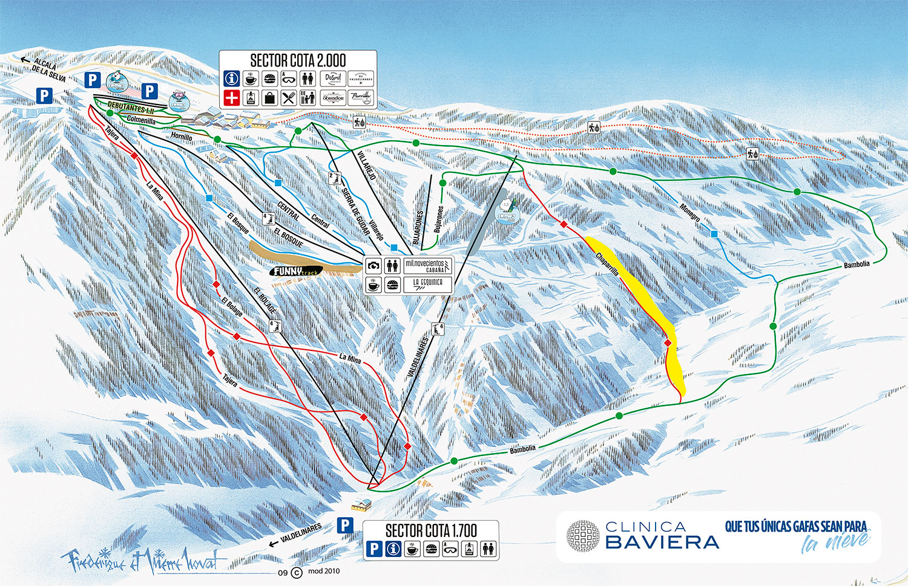

Javalambre-Valdelinares
Aramón Javalambre - Valdelinares se encuentran en el corazón de la sierra de Teruel a 2.000 metros de altitud.
Javalambre
Tanto si partes de cero como si tu objetivo es mejorar tu técnica, Aramón Javalambre pone a tu disposición clases de esquí personalizadas impartidas por auténticos profesionales de la nieve.
En esta moderna estación podrás disfrutar de una amplia oferta de servicios y actividades para todas las edades. ¡Aquí no hay cabida para el aburrimiento!
Aramón Javalambre apuesta, además, por el freestyle con el snowpark y una completa agenda de eventos relacionados con esta disciplina.
Si tienes tiempo, merece la pena que descubras el maravilloso entorno que rodea a la estación. Una forma de hacerlo es a pie, a través de sus casi 1.000 kilómetros de rutas señalizadas que te permitirán contemplar parajes de ensueño. Piérdete por sus pueblos, repón fuerzas en alguno de sus increíbles restaurantes y degusta su exquisita gastronomía local. El toque de trufa negra no falta en cualquier plato.
Valdelinares
Al sur de Teruel, en plena sierra de Gúdar, también podrás disfrutar de la nieve. Junto a su vecina Aramón Javalambre, es la estación preferida por los esquiadores valencianos, dada su cercanía, a solo una hora y media de Valencia.
En pareja, con amigos, en familia… Da igual con quién vengas. La estación de Aramón Valdelinares te conquistará por su comodidad, sus modernas instalaciones y sus hermosos bosques de pino negro.
Si eres novato en esto del esquí, dispones de una estupenda zona para debutantes en la parte alta de la estación. Si, por el contrario, eres un esquiador experimentado, en Valdelinares encontrarás también pistas de mayor dificultad que te permitirán disfrutar de sensaciones únicas.
Si buscas algo diferente, también puedes optar por un paseo en trineo con los tuyos o practicar el freestyle en el snowpark.
Pero la nieve es solo un motivo más para visitar esta hermosa zona de Aragón. El entorno de las estaciones de Valdelinares y Javalambre te ofrece infinitos atractivos: una completa red de senderos que discurren por parajes naturales de ensueño, pueblos con encanto que no te puedes perder y una exquisita gastronomía local que tiene en la trufa negra su mejor exponente.
Javalambre
13 pistas
- 4 Verdes
- 8 Azules
- 1 Rojas
3 Itinerario
Dominio esquiable
- 15 km
- 15 km de Innivación artificial
Innivadores
- 175 innivadores
Cota máxima
- 2.000 m
Cota mínima
- 1.650 m
9 remontes
- 2 Cintas transportadoras
- 4 Telesquís
- 2 Telesillas cuatriplaza
- 1 Telesillas sextiplaza
Capacidad de remontes
- 10.180 esquiadores / hora
Valdelinares
14 pistas
- 6 Verdes
- 4 Azules
- 4 Rojas
1 Itinerario
Dominio esquiable
- 17 km
- 17 km de Innivación artificial
Innivadores
- 261 innivadores
Cota máxima
- 2.000 m
Cota mínima
- 1.700 m
12 remontes
- 3 Cintas transportadoras
- 5 Telesquís
- 3 Telesillas cuatriplaza
- 1 Telesillas biplaza
Capacidad de remontes
- 13.220 esquiadores / hora